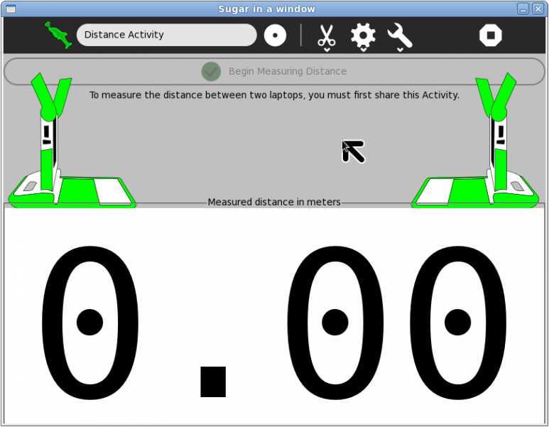

Distance¶
About¶
Distance (earlier known as Acoustic Tape Measure) determines the physical distance between two computers by measuring how long it takes sound pulses to travel between them.

Where to get Distance¶
Distance activity is available for download from the Sugar Activity Library: Distance
The source code is available on GitHub.
Using Distance¶
You need two laptops in order to use this activity.
Steps¶
Launch the Distance activity on one of the computers by clicking on the icon in the Home view.
Share the activity from the Share icon on the activity toolbar (or send an invitation to the another computer).
Launch the Distance activity on the second computer by clicking on the icon in the Neighborhood view (or Invitation icon).
Click on the “Begin Measuring Distance” button found near the top of the activity view on both computers.
The first computer will send an audio pulse; the second computer will respond with an audio pulse of its own; then both computers will calculate and display the distance between them (by default, the measurement is displayed in meters).
This process (Step 5) will repeat until you click on the “Stop Measuring Distance” button or you exit the activity.
Notes¶
Try not to move the laptops while a measurement is taking place as it will result in a inaccurate measurement. You can move them between consecutive measurements.
If the “Begin Measuring Distance” button does not activate, try relaunching the Distance activity again on the second laptop from the Neighborhood view.
Atmospheric conditions can impact the accuracy of the measurement; you can override the default settings by using the Atmosphere toolbar.
The units of measure can be changed by choosing a unit from the combo box (meters, centimeters, inches, feet, yards, or custom units) on the Customize toolbar. If you chose “custom units”, the current distance between the two laptops will be used as a metric. For example, you could measure the height of a student, Pedro, and then select that distance to define a new unit of measure, the “Pedro”.
The Copy button found on the Edit toolbar can be used to copy measurements to the toolbar.
The Paste button found on the Edit toolbar can be used to paste a new measurement unit into the activity. The scale of the measurement units should be specified in terms of meters, e.g., 39.37 for specifying inches.
For more information about the internals, please see Measurement Algorithm
For some ideas on how to use Distance, please see Ideas for use
Just for fun¶
When he heard about the feature in the Distance activity that allows one to define new metrics on the fly, Chris Leonard sent these units for consideration:
New measures:
Ratio of an igloo’s circumference to its diameter = Eskimo Pi
2000 pounds of Chinese soup = Won Ton
1 millionth of a mouthwash = 1 microscope
Time between slipping on a peel and smacking the pavement = 1 bananosecond
Weight an evangelist carries with God = 1 billigram
Time it takes to sail 220 yards at 1 nautical-mile per hour = Knotfurlong
16.5 feet in the Twilight Zone = 1 Rod Sterling
Half of a large intestine = 1 semicolon
1,000,000 aches = 1 megahurtz
Basic unit of laryngitis = 1 hoarsepower
Shortest distance between two jokes = A straight line
453.6 graham crackers = 1 pound cake
1-million-million microphones = 1 megaphone
2-million bicycles = 2 megacycles
365.25 days = 1 unicycle
2000 mockingbirds = 2 kilomockingbirds
52 cards = 1 decacards
1 kilogram of falling figs = 1 Fig Newton
1000 milliliters of wet socks = 1 literhosen
1 millionth of a fish = 1 microfiche
1 trillion pins = 1 terrapin
10 rations = 1 decoration
100 rations = 1 C-ration
2 monograms = 1 diagram
4 nickels = 2 paradigms
2.4 statute miles of intravenous surgical tubing at Yale University Hospital = 1 IV League
100 Senators = Not 1 decision
Where to report problems¶
Please report bugs and make feature requests at distance-activity.
Credits¶
Distance was written by Benjamin Schwartz. It is maintained by Rafael Ortiz and Walter Bender